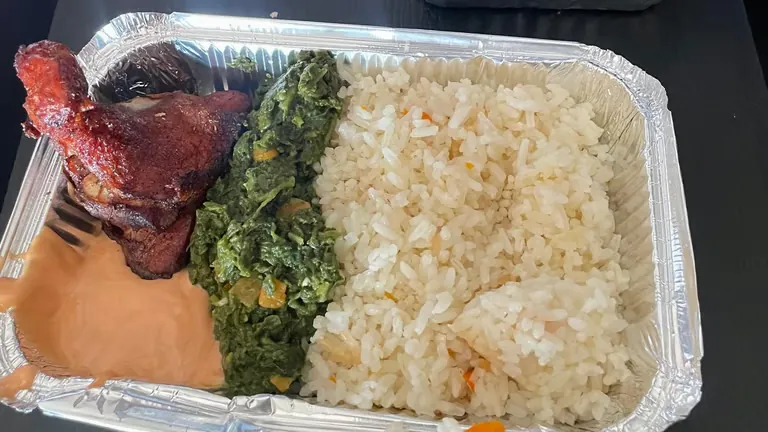

Chicken Corn Mayo Grain Bowl
Ingredients per bowl:
- 1 cup cooked white rice
- 100g grilled chicken (sliced)
- ½ cup roasted root vegetables
- ¼ cup roasted corn
- 2 tbsp garlic mayo sauce
Assembly Instructions:
- Scoop rice into the base of the bowl.
- Layer grilled chicken slices on one side.
- Add roasted root vegetables and corn in separate sections.
- Drizzle garlic mayo over the top.